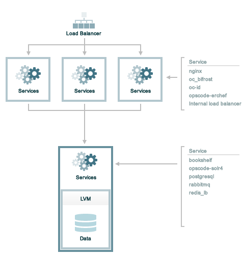

Tiered Installation (DEPRECATED)¶
Warning
This topic is deprecated as of the 12.9 release of the Chef servver. For the latest information on high availability and how to set up a highly-available server cluster, see High Availability: Backend Cluster.
This topic describes how to set up the Chef server with a single back end and multiple load-balanced frontend servers.
Prerequisites¶
Before installing the Chef server software, perform the following steps:
- The backend server must be accessible from each frontend server. A virtual IP address is created and managed by the Chef server, but will also need to be added to the DNS so that all machines in the tiered configuration may access it.
- Persistent data on the backend Chef server is primarily composed of cookbook files and directories. Separate disks should be dedicated entirely to storing this data prior to installing the Chef server.
- Load-balancing should be used with frontend servers, along with a DNS entry for the virtual IP address used for load balancing. This virtual IP address is added to the chef-server.rb file as the api_fqdn.
- All required ports must be open. See the Firewalls section (below) for the list of ports. All connections to and from the Chef server are accomplished via TCP. Refer to the operating system’s manual or your systems administrators for instructions on how to configure to ports, if necessary.
- The hostname for the Chef server must be an FQDN, including the domain suffix, and must be resolvable by the backend and frontend servers. See Hostnames, FQDNs for more information.
- chef-server-ctl reconfigure will not bind the backend_vip to the backend server. The easiest thing to do is just define backend_vip as the already configured main IP address of the backend system. If you need to use an additional address, it will need to be configured and bound on the system before chef-server-ctl reconfigure is run.
Disk Configuration¶
Persistent data on the backend server of the Chef server is primarily composed of cookbook files and directories. Separate disks should be dedicated entirely to storing this data prior to installing the Chef server. These disks should:
- Utilize hardware RAID
- Be configured in either RAID1
This assumes that:
- ~300GB of raw, unpartitioned disk space is available
- The disk space presents as a single device. For example: /dev/sdb.
- The storage is added to a volume group named opscode and is presented to the Chef server by mounting on /var/opt/opscode before a reconfiguration
The following commands properly set up disk configuration on the backend server:
$ pvcreate /dev/sdb
and:
$ vgcreate opscode /dev/sdb
and:
$ lvcreate -l 80%VG -n tiered opscode
Mount Storage Device¶
To build and mount the storage device on the backend server, do the following:
Create the file system. For example, an ext4 type named tiered:
$ mkfs.ext4 /dev/opscode/tiered
then:
$ mkdir -p /var/opt/opscode
and then:
$ mount /dev/opscode/tiered /var/opt/opscode
Backend¶
Use the following steps to set up the backend Chef server:
Download the packages from https://downloads.chef.io/chef-server/. For Red Hat and CentOS 6:
$ rpm -Uvh /tmp/chef-server-core-<version>.rpm
For Ubuntu:
$ dpkg -i /tmp/chef-server-core-<version>.deb
After a few minutes, the Chef server will be installed.
Create a file named chef-server.rb that is located in the /etc/opscode/ directory. See the chef-server.rb section below for an example of the settings and values that are required.
chef-server.rb¶
The chef-server.rb file that is located in the /etc/opscode/ directory describes the topology of the tiered configuration. On the backend server, create a file named chef-server.rb and save it in the /etc/opscode/ directory.
Add the following settings to the chef-server.rb file:
Define the topology type:
topology "tier"
Define the backend server:
server "FQDN", :ipaddress => "IP_ADDRESS", :role => "backend", :bootstrap => true
Replace FQDN with the FQDN of the server and IP_ADDRESS with the IP address of the server. The role is a backend server is "backend".
Define the backend virtual IP address:
backend_vip "FQDN", :ipaddress => "IP_ADDRESS", :device => "eth0"
Replace FQDN with the FQDN of the server. Replace IP_ADDRESS with the virtual IP address of the server. The :device parameter should be the ethernet interface to which the virtual IP address will bind. This is typically the public interface of the server. In a typical tiered install, the config here could also be just the main FQDN and IP address that are already configured for the backend. Running chef-server-ctl reconfigure will not bind the backend_vip address to an interface, this must be done on startup of the machine.
Define each frontend server:
server "FQDN", :ipaddress => "IP_ADDRESS", :role => "frontend"
Replace FQDN with the FQDN of the frontend server. Replace IP_ADDRESS with the IP address of the frontend server. Set :role to "frontend".
Add separate entry in the chef-server.rb file for each frontend server.
Define the API FQDN:
api_fqdn "FQDN"
Replace FQDN with the FQDN of the load balanced virtual IP address, which should be equal to the FQDN for the service URI that is used by the Chef server.
- Reconfigure the Chef server and the Chef management console (standalone and frontend group members
of a High Availabilty installation):
$ sudo chef-server-ctl reconfigure $ sudo chef-manage-ctl reconfigure
Frontend¶
For each frontend server, use the following steps to set up the Chef server:
Install the Chef server package. For Red Hat and CentOS 6:
$ rpm -Uvh /tmp/chef-server-core-<version>.rpm
For Ubuntu:
$ dpkg -i /tmp/chef-server-core-<version>.deb
After a few minutes, the Chef server will be installed.
Create the /etc/opscode/ directory, and then copy the entire contents of the /etc/opscode directory from the primary backend server, including all certificates and the chef-server.rb file.
- Reconfigure the Chef server and the Chef management console (standalone and frontend group members
of a High Availabilty installation):
$ sudo chef-server-ctl reconfigure $ sudo chef-manage-ctl reconfigure
Start the Chef server:
$ sudo chef-server-ctl start
Run the following command to create an administrator:
$ chef-server-ctl user-create USER_NAME FIRST_NAME LAST_NAME EMAIL 'PASSWORD' --filename FILE_NAMEAn RSA private key is generated automatically. This is the user’s private key and should be saved to a safe location. The --filename option will save the RSA private key to the specified absolute path.
For example:
$ chef-server-ctl user-create stevedanno Steve Danno steved@chef.io 'abc123' --filename /path/to/stevedanno.pemRun the following command to create an organization:
$ chef-server-ctl org-create short_name 'full_organization_name' --association_user user_name --filename ORGANIZATION-validator.pemThe name must begin with a lower-case letter or digit, may only contain lower-case letters, digits, hyphens, and underscores, and must be between 1 and 255 characters. For example: 4thcoffee.
The full name must begin with a non-white space character and must be between 1 and 1023 characters. For example: 'Fourth Coffee, Inc.'.
The --association_user option will associate the user_name with the admins security group on the Chef server.
An RSA private key is generated automatically. This is the chef-validator key and should be saved to a safe location. The --filename option will save the RSA private key to the specified absolute path.
For example:
$ chef-server-ctl org-create 4thcoffee 'Fourth Coffee, Inc.' --association_user stevedanno --filename /path/to/4thcoffee-validator.pem- Reconfigure the Chef server and the Chef management console (standalone and frontend group members
of a High Availabilty installation):
$ sudo chef-server-ctl reconfigure $ sudo chef-manage-ctl reconfigure
Enable Features¶
Enable additional features of the Chef server! The packages may be downloaded directly as part of the installation process or they may be first downloaded to a local directory, and then installed.
Use Downloads
The install subcommand downloads packages from https://packages.chef.io/ by default. For systems that are not behind a firewall (and have connectivity to https://packages.chef.io/), the Chef management console package can be installed as described below:
- Chef Manage
Use Chef management console to manage data bags, attributes, run-lists, roles, environments, and cookbooks from a web user interface.
On each front end server in the Chef server configuration, run:
$ chef-server-ctl install chef-manage
then:
$ chef-server-ctl reconfigure
and then:
$ chef-manage-ctl reconfigure
This updates the Chef server and creates the /etc/opscode-manage/secrets.rb file. When running the Chef management console 1.11 (or higher), copy the secrets.rb file in the /etc/opscode-manage directory on one of the frontend servers to the same directory on each of the other frontend servers, and then rerun chef-manage-ctl reconfigure so the copied /etc/opscode-manage/secrets.rb file gets used correctly.
Note
Starting with the Chef management console 2.3.0, the Chef MLSA must be accepted when reconfiguring the product. If the Chef MLSA has not already been accepted, the reconfigure process will prompt for a yes to accept it. Or run chef-manage-ctl reconfigure --accept-license to automatically accept the license.
Use Local Packages
The install subcommand downloads packages from https://packages.chef.io/ by default. For systems that are behind a firewall (and may not have connectivity to packages.chef.io), these packages can be downloaded from https://downloads.chef.io/chef-manage/, and then installed manually. First download the package that is appropriate for the platform, save it to a local path, and then run the install command using the --path option to specify the directory in which the package is located:
$ chef-server-ctl install PACKAGE_NAME --path /path/to/package/directory
For example:
$ chef-server-ctl install chef-manage --path /root/packages
The chef-server-ctl command will install the first chef-manage package found in the /root/packages directory.
Install Reporting
To set up the Reporting server:
Install the package on each frontend and backend Chef server:
$ chef-server-ctl install opscode-reporting
Reconfigure the Chef server on the backend primary server (bootstrap):
$ chef-server-ctl reconfigure
Reconfigure the Reporting server on the backend primary server (bootstrap):
$ opscode-reporting-ctl reconfigure
Note
Starting with Reporting 1.6.0, the Chef MLSA must be accepted when reconfiguring the product. If the Chef MLSA has not already been accepted, the reconfigure process will prompt for a yes to accept it. Or run opscode-reporting-ctl reconfigure --accept-license to automatically accept the license.
Copy the entire /etc/opscode-reporting directory from the backend primary server to all frontend and backend servers. For example, from each server run:
$ scp -r <Bootstrap server IP>:/etc/opscode-reporting /etc
or from the backend primary server:
$ scp -r /etc/opscode-reporting <each servers IP>:/etc
Reconfigure any Chef server on which Reporting services have been installed:
$ chef-server-ctl reconfigure
Reconfigure Reporting services on each server:
$ opscode-reporting-ctl reconfigure
Verify the installation:
$ opscode-reporting-ctl test
Reference¶
The following sections show an example chef-server.rb file and a list of the ports that are required by the Chef server.
chef-server.rb¶
A completed chef-server.rb configuration file for a four server tiered Chef server configuration, consisting of:
| FQDN | Real IP Address | Role |
|---|---|---|
| be1.example.com | 192.168.4.1 | backend |
| fe1.example.com | 192.168.4.2 | frontend |
| fe2.example.com | 192.168.4.3 | frontend |
| fe3.example.com | 192.168.4.4 | frontend |
| chef.example.com | load balanced frontend VIP | |
| be.example.com | 192.168.4.7 | load balanced backend VIP |
Looks like this:
topology "tier"
server "be1.example.com",
:ipaddress => "192.168.4.1",
:role => "backend",
:bootstrap => true
backend_vip "be.example.com",
:ipaddress => "192.168.4.7",
:device => "eth0"
server "fe1.example.com",
:ipaddress => "192.168.4.2",
:role => "frontend"
server "fe2.example.com",
:ipaddress => "192.168.4.3",
:role => "frontend"
server "fe3.example.com",
:ipaddress => "192.168.4.4",
:role => "frontend"
api_fqdn "chef.example.com"
Firewalls¶
All of the ports used by the Chef server are TCP ports. Refer to the operating system’s manual or site systems administrators for instructions on how to enable changes to ports, if necessary.
All services must be listening on the appropriate ports. Most monitoring systems provide a means of testing whether a given port is accepting connections and service-specific tools may also be available. In addition, the generic system tool Telnet can also be used to initiate the connection:
$ telnet HOST_NAME PORT
A single loopback interface should be configured using the 127.0.0.1 address. This ensures that all of the services are available to the Chef server, in the event that the Chef server attempts to contact itself from within a front or back end machine. All ports should be accessible through the loopback interface of their respective hosts.
Backend¶
For back-end servers in a tiered Chef server installation, ensure that ports marked as external (marked as yes in the External column) are open and accessible via any firewalls that are in use:
| Port | Service Name, Description | External |
|---|---|---|
| 80, 443, 9683 | nginx The nginx service is used to manage traffic to the Chef server, including virtual hosts for internal and external API request/response routing, external add-on request routing, and routing between front- and back-end components. Note Port 9683 is used to internally load balance the oc_bifrost service. |
yes |
| 9463 | oc_bifrost The oc_bifrost service ensures that every request to view or manage objects stored on the Chef server is authorized. |
|
| 8983 | opscode-solr4 The opscode-solr4 service is used to create the search indexes used for searching objects like nodes, data bags, and cookbooks. (This service ensures timely search results via the Chef server API; data that is used by the Chef platform is stored in PostgreSQL.) |
|
| 5432 | postgresql The postgresql service is used to store node, object, and user data. |
|
| 5672, 15672 | rabbitmq The rabbitmq service is used to provide the message queue that is used by the Chef server to get search data to Apache Solr so that it can be indexed for search. When Chef Analytics is confiugred, the rabbitmq service is also used to send data from the Chef server to the Chef Analytics server. |
|
| 16379 | redis_lb Key-value store used in conjunction with Nginx to route requests and populate request data used by the Chef server. |
|
| 4321 | bookshelf The bookshelf service is an Amazon Simple Storage Service (S3)-compatible service that is used to store cookbooks, including all of the files—recipes, templates, and so on—that are associated with each cookbook. |
|
| 8000 | opscode-erchef The opscode-erchef service is an Erlang-based service that is used to handle Chef server API requests to the following areas within the Chef server:
|
Frontend¶
For front-end servers, ensure that ports marked as external (marked as yes in the External column) are open and accessible via any firewalls that are in use:
| Port | Service Name, Description | External |
|---|---|---|
| 80, 443, 9683 | nginx The nginx service is used to manage traffic to the Chef server, including virtual hosts for internal and external API request/response routing, external add-on request routing, and routing between front- and back-end components. Note Port 9683 is used to internally load balance the oc_bifrost service. |
yes |
| 9463 | oc_bifrost The oc_bifrost service ensures that every request to view or manage objects stored on the Chef server is authorized. |
|
| 9090 | oc-id The oc-id service enables OAuth 2.0 authentication to the Chef server by external applications, including Chef Supermarket and Chef Analytics. OAuth 2.0 uses token-based authentication, where external applications use tokens that are issued by the oc-id provider. No special credentials—webui_priv.pem or privileged keys—are stored on the external application. |
|
| 8000 | opscode-erchef The opscode-erchef service is an Erlang-based service that is used to handle Chef server API requests to the following areas within the Chef server:
|